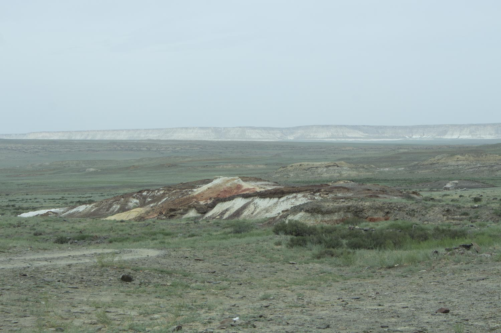

Научная классификация
| Ранг таксона | Название на русском | Название на латинском |
|---|---|---|
| Царство | Животные | Animalia |
| Тип | Хордовые | Chordata |
| Класс | Хрящевые рыбы | Chondrichthyes |
| Подкласс | Пластиножаберные | Elasmobranchii |
| Надотряд | Акулы | Selachimorpha |
| Род | Ископаемые акулы | Elasmobranchii |
Охранный статус
Статус МСОП: Не оценивался (NE)Ископаемые зубы акул являются палеонтологическими находками и не требуют охраны. Однако места их обнаружения могут нуждаться в защите от неконтролируемого сбора.
Внешний вид
Ископаемые зубы акул имеют характерные особенности:
- Размеры: от нескольких миллиметров до 15-20 см
- Окраска: обычно черная, серая или коричневая из-за минерализации
- Особенности:
- Морских отложениях
- Прибрежных зонах
- Древних речных долинах
- В Мангистау часто находят в меловых отложениях
- Обрывы и овраги
- Берега водоемов
- Карьеры
- Оползневые участки
- Рыбы
- Морские рептилии
- Моллюски
- Другие акулы
- Морские млекопитающие
- Активность: активные хищники
- Социальное поведение: одиночное или стайное
- Адаптации: различные типы зубов для разных способов охоты
- Особенности: постоянная замена зубов
- Откладывали яйца или были живородящими
- Имели длительный период развития
- Достигали половой зрелости в разном возрасте
- Мелкие виды: 20-30 лет
- Крупные виды: до 100 лет
Ареал и местообитание
Ископаемые зубы акул встречаются в:
Типичные места находок:
Питание
Ископаемые зубы акул могут рассказать о рационе древних акул:
Форма зубов указывает на специализацию в питании.
Поведение
Размножение
Ископаемые зубы не дают прямых свидетельств о размножении, но известно, что древние акулы:
Продолжительность жизни
По ископаемым зубам сложно определить продолжительность жизни, но современные акулы живут:
Интересные факты
- Зубы акул сохраняются лучше других частей скелета благодаря высокой минерализации.
- По форме зубов можно определить не только вид акулы, но и ее размер.
- Некоторые зубы акул использовались древними людьми как орудия труда и украшения.
- В Мангистау находят зубы акул, живших в древнем океане Тетис.
- Ископаемые зубы акул помогают ученым изучать эволюцию морских экосистем.
Источники информации
- Cappetta H. Chondrichthyes II: Mesozoic and Cenozoic Elasmobranchii. Handbook of Paleoichthyology. Verlag Dr. Friedrich Pfeil, 2012.
- Long J.A. The Rise of Fishes: 500 Million Years of Evolution. Johns Hopkins University Press, 2010.
- Welton B.J., Farish R.F. The Collector's Guide to Fossil Sharks and Rays from the Cretaceous of Texas. Before Time, 1993.
Теги
#ископаемые #палеонтология #акулы #хрящевые_рыбы #меловые_отложения